差排與強化機制
本章預覽
📌 本章要解決的核心問題
為什麼純金柔軟可延，但添加少量銅就變得堅硬？為什麼細晶粒鋼比粗晶粒鋼更強？為什麼敲打金屬（冷加工）使它變硬但也變脆？本章從差排的運動和障礙物的角度，統一解釋金屬的四大強化機制——晶粒細化、固溶強化、加工硬化、析出硬化——以及加熱時微觀結構如何透過回復和再結晶回到軟態。
🔑 關鍵概念
- 滑移系統 = 滑移面 + 滑移方向：FCC 12 個、BCC 12–48 個、HCP 3 個
- Schmid 定律：$\tau_R = \sigma \cos\phi\cos\lambda$——分解剪切應力達到 $\tau_{crss}$ 時啟動滑移
- 晶粒細化（Hall-Petch）：$\sigma_y = \sigma_0 + k_y d^{-1/2}$——唯一同時提高強度和韌性
- 固溶強化：雜質原子晶格畸變→阻礙差排
- 加工硬化：塑性變形產生更多差排→差排交互作用→繼續變形更困難
- 回復：加熱→差排重排為低能組態（多邊化）
- 再結晶：無應變新晶粒成核和成長→完全消除加工硬化
- 晶粒成長：大晶粒吞併小晶粒→強度下降
🧭 本章推理地圖
- 外加應力產生分解剪應力（§7.2）→ 達到 CRSS（§7.3）→ 差排沿滑移系統移動（§7.1、§7.5）。
- 晶體結構與取向決定可啟動的滑移系統（§7.1–§7.3）→ 控制單晶及多晶的降伏與延性（§7.4、§7.6）。
- 溶質與晶界（§7.8）、其他差排（§7.9）或析出物（§7.10）阻礙差排 → 移動需要更高應力 → 材料被強化。
- 強化降低差排移動能力（§7.8–§7.10）→ 強度提高通常伴隨延性下降，形成工程取捨。
- 冷加工提高差排密度（§7.9）；加熱提供擴散能力 → 回復（§7.11）→ 再結晶（§7.12）→ 晶粒成長（§7.13）。
先備知識橋接
- Ch4 §4.5：差排的兩種基本類型（刃差排 $\mathbf{b} \perp$ 線、螺旋差排 $\mathbf{b} \parallel$ 線）、Burgers 向量的定義和意義
- Ch3：FCC/BCC/HCP 晶體結構、最密堆積面和方向——滑移系統的晶體學基礎
- Ch6：降伏強度 $\sigma_y$、塑性變形的定義——本章解釋「為什麼」降伏發生以及「如何」提高 $\sigma_y$
7.1 滑移系統——差排的「軌道」
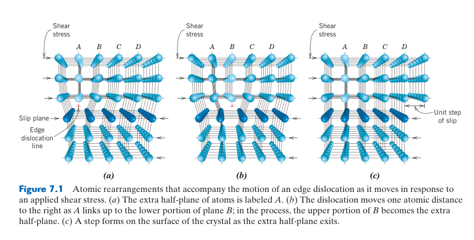
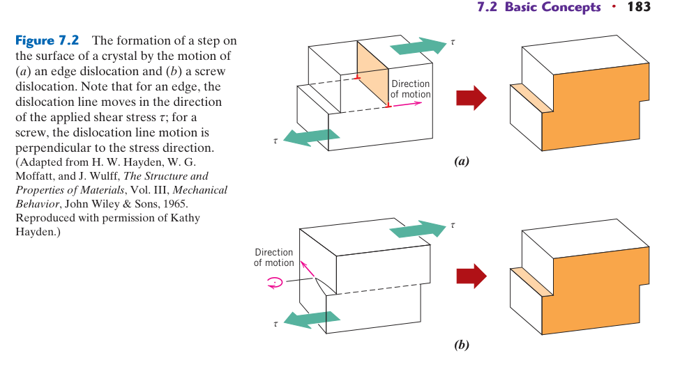
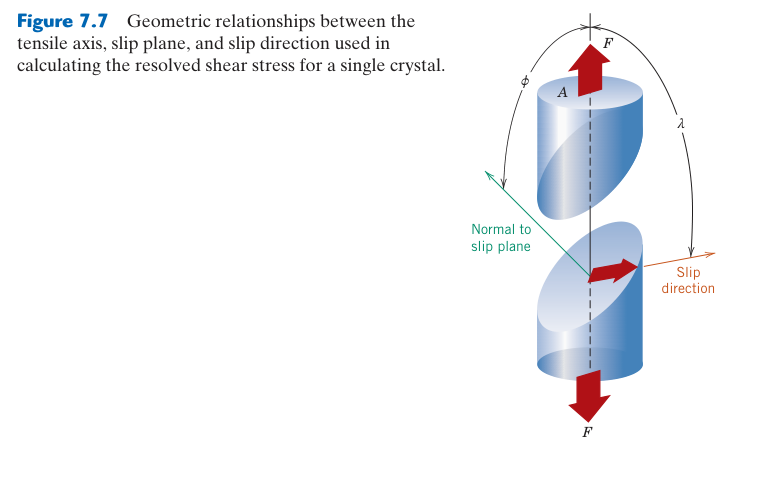
滑移系統數目不等於實際可動性
列出幾何上可能的晶面與方向，只完成了第一步。差排能否在實際溫度與載入速率下移動，還取決於差排核心寬度、Peierls 阻力與交滑移能力。FCC 的密排面與密排方向使差排核心較寬、晶格摩擦低，因此即使低溫仍常有良好延性。BCC 沒有真正密排面，尤其螺旋差排核心分散在多個晶面上，移動需以熱激活形成 kink-pair；低溫或快速載入時流動應力便大幅增加。
如何檢查一組滑移系統
以 $(hkl)[uvw]$ 表示時，滑移方向必須位於滑移面內，因此需滿足 $hu+kv+lw=0$。接著利用晶體對稱性列出等效面與方向，排除正、反方向的重複計數。HCP 的四指數記號還需符合 $u+v+t=0$。這套檢查能避免只背誦「12 個系統」，卻把不在面內的方向錯配給晶面。
滑移系統也決定塑性各向異性。軋延或擠製造成的晶體織構會讓多數晶粒的易滑移方向集中，使縱向、橫向與厚度方向具有不同降伏、深抽與耳高行為；因此多晶即使化學成分均勻，也未必是力學各向同性。
最後要區分「滑移系統總數」與「獨立且可啟動的系統數」：對稱等效不代表線性獨立，高 CRSS 的系統在指定條件下也不能算作有效塑性自由度。
這項區分也是比較 FCC、BCC 與 HCP 延性的必要前提。
深入理解：密排面具有較大面間距，密排方向則對應最短 Burgers 向量；由於差排線能約與 $Gb^2$ 成正比，這種組合通常具有最低滑移阻力。FCC 有 12 組易動系統；BCC 雖有更多候選系統，螺旋差排核心卻使其運動對溫度與應變速率高度敏感。
滑移面與滑移方向 —— 正式定義
滑移面（slip plane）：差排在其中移動的晶體學平面。通常是原子密度最高的平面——面間距最大，面與面之間的鍵結最弱，因此滑移阻力最小。例如 FCC 的 {111} 面、BCC 的 {110} 面、HCP 的 (0001) 基底面。
滑移方向（slip direction）：差排在滑移面上移動的晶體學方向。對應原子密度最高的方向——Burgers 向量最短（$E \propto |\mathbf{b}|^2$），能量最低。例如 FCC/BCC 的 ⟨110⟩ 方向、HCP 的 ⟨11-20⟩ 方向。
一個滑移面 + 一個滑移方向 = 一個滑移系統（slip system）。差排只能在這些特定的「軌道」上運動，就像火車必須沿鐵軌行駛——這是塑性變形具有晶體學方向性的根本原因。
如何判斷一個方向是否在滑移面內？
在立方晶系中，$(hkl)$ 是晶面的 Miller 指數，可以視為該平面的法向量；$[uvw]$ 是方向向量。一個方向要「躺在」平面內，本質上就是：
▶ 例如：FCC 滑移系統 $\{111\}\langle110\rangle$——檢查 $[110]$ 是否在 $(111)$ 內：$1\cdot1 + 1\cdot1 + 1\cdot0 = 2 \neq 0$ → ❌
▶ 正確配對：$(111)[1\bar{1}0]$——$1\cdot1 + 1\cdot(-1) + 1\cdot0 = 0$ → ✓ 方向確實在該面內
| 概念 | 比喻 |
|---|---|
| 晶體 | 一疊整齊排列的撲克牌 |
| 滑移面 | 某兩層牌之間的接觸面 |
| 滑移方向 | 牌被推動的方向 |
| 差排 | 局部的小皺摺或錯位（不是整層一起滑，而是從局部開始） |
| 塑性變形 | 整疊牌滑開後留下永久形變 |
關鍵洞見：如果整層牌同時滑動，需要的力極大（理論強度 $\sim G/10$）。但差排只移動局部原子——就像先推擠一個小皺摺、讓它沿著接觸面傳播過去——所需應力降低了 100–1000 倍。這就是為什麼真實金屬的降伏強度遠低於理論計算值。
差排不是隨意移動的——它們沿著特定的晶體學面和方向運動，就像火車必須沿鐵軌行駛。一個滑移面加一個滑移方向構成一個滑移系統。滑移面通常是原子密度最高的平面（面間距最大 → 面與面之間的鍵結最弱 → 滑移阻力最小）；滑移方向是原子密度最高的方向（最短 Burgers 向量 → 能量最低，因為 $E \propto |\mathbf{b}|^2$）。
三大晶體結構的滑移系統：FCC——滑移面 {111}（4 個等效面）× 滑移方向 ⟨110⟩（每個面 3 個方向）= 12 個滑移系統。豐富的滑移系統使 FCC 金屬（Al, Cu, Ni, γ-Fe）具有極佳的室溫延性。BCC——滑移面 {110}, {112}, {123}（取決於溫度）× 滑移方向 ⟨111⟩（最密方向）= 12–48 個潛在滑移系統。但 BCC 的螺旋差排運動是熱激活的 → 低溫下滑移困難 → DBTT（Ch8）。HCP——滑移面 (0001)（基底面）× 滑移方向 ⟨11-20⟩（3 個方向）= 僅 3 個基底滑移系統。遠不足以滿足 von Mises 準則（需要 ≥5 個獨立系統）→ HCP 金屬（Mg, Zn, Ti-α）室溫脆性。
🔬 深入思考：為什麼塑性變形不能靠「反方向滑回去」來回復？
彈性 vs 塑性：根本區別
彈性變形：原子只是暫時偏離平衡位置——鍵被拉長或壓縮，但原子沒有換鄰居。卸載後原子回到原位 → 可逆。
塑性變形：差排通過晶體後，上下兩部分產生一個 Burgers vector 的相對滑移。原子層不是被拉開，而是已經錯開一格——這是永久變形的來源。
為什麼不能讓差排反方向滑回去？
理論上，單一差排在完美晶體裡可以反向滑回去。但真實塑性變形後：
- 差排可能已經跑到晶體表面消失
- 被晶界、析出物、雜質卡住
- 與其他差排反應形成纏結與塞積（差排森林）
- 透過 Frank-Read source 等機制大量增殖——差排密度從 10⁶/cm² 增至 10¹²/cm²
反向施力時，不是原本那批差排原路返回，而是啟動新的反向滑移——產生新的塑性變形，但不等於回到原始微觀狀態。
如果地毯上只有一個小皺摺，往前推→地毯移動；往後推→地毯回來。
但真實塑性變形更像是：地毯上出現很多皺摺，有些互相纏住、有些卡在家具下、有些已經被推到邊界消失、表面還產生了新的摺痕。這時候反向推，不會剛好讓所有皺摺反向回復——只會產生另一套新的皺摺。
反向滑移確實存在，但不是完整回復
Bauschinger 效應：材料先向一個方向塑性變形後，反向加載時降伏應力降低——因為先前累積的背應力（back stress）會幫助反向差排運動。這說明反向滑移確實會發生。
但反向塑性變形只能部分抵消外觀形狀，微觀結構（差排密度、纏結、殘留應力）並未恢復到原始狀態。你把金屬彎回來，裡面仍然留下大量差排。
真正要「恢復」，要靠退火
想讓塑性變形後的金屬回到接近原始狀態，必須加熱退火（§7.11–§7.13）：
| 階段 | 溫度 | 機制 |
|---|---|---|
| 回復 | ~0.3 Tm | 差排重排為低能組態，內應力降低 |
| 再結晶 | ~0.4–0.6 Tm | 形成新的無應變晶粒，取代變形結構 |
| 晶粒成長 | >0.6 Tm | 大晶粒吞併小晶粒，進一步降低總界面能 |
不是靠「反方向滑回去」，而是靠熱活化讓微結構重組。
彈性變形是原子位置的小幅可逆偏移；塑性變形是差排造成的晶格滑移與微結構重排——具有路徑依賴性，差排一旦增殖、纏結、被釘扎或跑出表面，就無法靠卸載原路返回。要「恢復」只能靠退火。
7.2 Schmid 定律——哪個滑移系統先啟動？
Schmid 定律的假設邊界
此定律假設單晶承受均勻單軸應力，且各滑移系統具有相同 CRSS；它忽略自由表面、缺口、鄰晶粒拘束與非 Schmid 效應。FCC 在初始降伏時通常近似良好；BCC 螺旋差排的核心受非滑移方向應力影響，啟動不一定只由滑移面上的剪應力決定。多晶中每個晶粒還承受為維持相容性而產生的多軸內應力。
角度計算的穩健流程
先把拉伸軸、面法線和滑移方向轉為同一正交晶體座標，再用點積求 $\cos\phi$ 與 $\cos\lambda$。面與方向的正負號只改變剪切方向，判斷啟動通常比較 $|m|$。對所有候選系統計算後排序，最大者只是「最可能先啟動」；若數組 $m$ 接近，可能同時多重滑移並快速加工硬化。
Schmid 因子還能解釋單晶試片為何在拉伸中旋轉：滑移造成的形狀改變使晶格相對載荷軸轉向，原先的 $\phi$、$\lambda$ 與 $m$ 隨應變改變。故它最可靠地預測首次降伏，而不是用單一初始角度描述整段塑性曲線。
壓縮時載荷軸相反但分解剪應力的絕對值可相同；若實驗出現顯著拉壓不對稱，通常表示雙晶、非 Schmid 效應、織構或壓力敏感機制已介入。
所以 Schmid 定律應先作基準預測，再以偏差辨識額外機制。
幾何意義：$\tau_R=\sigma\cos\phi\cos\lambda$ 是把外加應力投影到特定滑移面與方向。Schmid 因子最大值為 0.5；單晶通常由 $m$ 最大的系統先滑移，但後續晶格旋轉、多重滑移與鄰近晶粒拘束會使有效取向持續改變。
外加應力 $\sigma$ 是單軸的，但差排需要剪切應力來驅動。Schmid 定律將兩者關聯起來：$\tau_R = \sigma \cos\phi \cos\lambda$，其中 $\phi$ = 應力軸與滑移面法線的夾角，$\lambda$ = 應力軸與滑移方向的夾角。乘積 $m = \cos\phi\cos\lambda$ 稱為Schmid 因子——範圍 0–0.5。$m = 0.5$（$\phi = \lambda = 45°$）時，給定的外加應力在該滑移系統上產生最大的剪切應力——這個取向的晶粒最先降伏。$m \approx 0$ 時，無論外加應力多大，該系統永遠不會被激活。
7.3 臨界分解剪切應力（CRSS）與 Schmid 因子計算
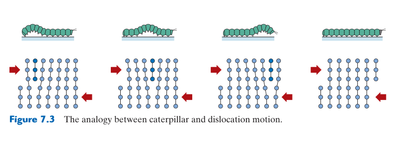
CRSS 為何會隨狀態改變
「材料本徵性質」不代表永遠固定。CRSS 會隨溫度、應變速率、溶質濃度、析出狀態與既有差排密度改變。退火純單晶的 CRSS 很低；一旦滑移開始，差排倍增與交互作用使後續滑移需要更高剪應力。若試驗中把整段塑性區都用同一 CRSS 描述，就會忽略加工硬化。
從單晶降伏推回 CRSS
實驗上可量取單晶首次偏離線彈性的外加應力，再乘當時最有利系統的 Schmid 因子得到 CRSS。試片必須取向已知、載荷對中且表面損傷低；若夾持引入彎曲或已有殘留應力，反推值會偏差。比較不同溫度時還應保持相近應變速率，因熱激活滑移常以應力和時間共同控制。
計算結果也應做物理檢查：$m$ 不可超過 0.5，$\sigma_y$ 應不小於約 $2\tau_{crss}$。若得到極大的降伏應力，先確認角度是相對「面法線」而不是相對滑移面本身，並確認使用度數而非弧度。
若研究析出強化或輻照材料，還可能觀察到滑移通道：少數差排切除局部障礙後，後續差排集中沿同一路徑通過。此時首次 CRSS、持續流動應力和宏觀降伏並不等價，局部化也會提高晶界開裂風險。
CRSS 常以剪應力表示，材料規格卻多報拉伸降伏強度；兩者轉換需明確的取向或多晶 Taylor 因子，不能默認永遠相差兩倍。
多晶 Taylor 因子還會隨織構和允許滑移系統改變；隨機 FCC 常用的近似值不適合直接套到強織構板材、BCC 或 HCP。用微壓縮柱量測單晶 CRSS 時，也需注意尺寸效應：試柱越小，差排源越少，表觀強度可能越高。
材料阻力與取向要分開：CRSS 反映晶格摩擦、溶質、析出物及其他差排造成的阻力，Schmid 因子只描述幾何。開始滑移的名義應力為 $\sigma_y=\tau_{crss}/m$；計算時應檢查全部候選滑移系統，而不是只代入一組熟悉的晶面方向。
臨界分解剪切應力 $\tau_{crss}$ 是啟動特定滑移系統所需的最小剪切應力——它是材料的本徵性質，取決於晶格阻力（Peierls 應力）、溫度和應變速率。FCC 純金屬的 $\tau_{crss}$ 極低（純銅 ~0.5 MPa）——純金屬之所以軟，就是因為差排幾乎可以自由移動。BCC 金屬的 $\tau_{crss}$ 對溫度極其敏感——低溫時螺旋差排的熱激活不足 → $\tau_{crss}$ 急劇上升 → 在達到 $\tau_{crss}$ 之前，裂紋尖端的應力已超過劈裂強度 → 脆性斷裂（DBTT 的根源，Ch8）。
📝 範例 7.1：Schmid 因子計算與降伏預測
題目：純銅單晶的 $\tau_{crss} = 0.5$ MPa。拉伸軸與滑移面法線夾角 $\phi = 35°$，與滑移方向夾角 $\lambda = 55°$。求降伏所需的外加應力。
解：$m = \cos 35° \times \cos 55° = 0.819 \times 0.574 = 0.470$。$\sigma_y = \tau_{crss}/m = 0.5/0.470 = 1.06$ MPa。
另一晶粒 $\phi = 80°, \lambda = 60°$：$m = 0.174 \times 0.5 = 0.087$。$\sigma_y = 0.5/0.087 = 5.75$ MPa——需要高 5.4 倍的應力才降伏。這就是多晶材料中不同晶粒不同時降伏的原因。
7.4 von Mises 準則與多晶延性
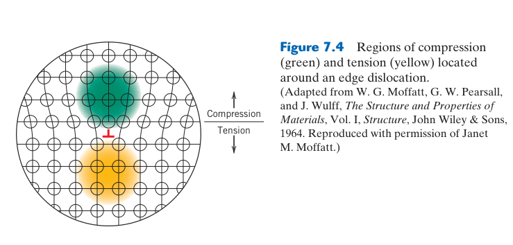
幾何必要條件不等於充分條件
具有五個獨立滑移系統，只表示晶粒在運動學上有能力配合任意形狀改變；若 CRSS 太高、晶界脆弱或溫度太低，材料仍可能先斷裂。反之，HCP 金屬可透過非基底滑移、變形雙晶、晶界滑動或升溫改善延性。因此 von Mises 條件應被視為多晶均勻塑性的幾何基線，而不是單獨預測延性的材料定律。
獨立性的判斷
兩個看似不同的滑移系統若產生的塑性應變張量可由其他系統線性組合得到，就不提供新的自由度。塑性變形近似體積守恆，對稱應變張量六個分量扣除體積分量後剩五個，這是「五」的來源。真實多晶通常需要比最低數量更多系統共同運作，才能降低晶界附近的應變集中。
五個獨立系統的意義：晶粒若要在不產生孔洞或重疊的前提下配合鄰粒任意改變形狀，需要足夠的獨立塑性自由度。FCC 容易滿足；HCP 室溫下可動系統較少，常需靠變形雙晶，或升溫啟動柱面與錐面滑移。
一個任意形狀的變化（應變張量有 6 個分量，體積守恆約束後剩 5 個獨立分量）需要至少5 個獨立的滑移系統才能適應——這就是 von Mises 準則。獨立意味著該系統產生的應變不能由其餘系統的組合產生。FCC 的 12 個 {111}⟨110⟩ 中，同一面上的 3 個方向只有 2 個線性獨立，4 個面 × 2 = 8，晶體學對稱性進一步降到 5 → 恰好滿足 → 多晶 FCC 室溫延性極佳。HCP 基底滑移僅提供 2 個獨立系統 → 不滿足 → 多晶 HCP 室溫脆性。這就是為什麼純鎂和純鋅無法在室溫軋延——需要加熱激活額外的角錐滑移系統。
7.5 滑移的微觀觀察——滑移線與滑移帶
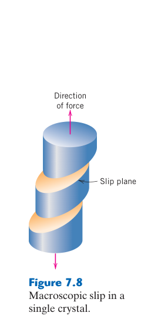
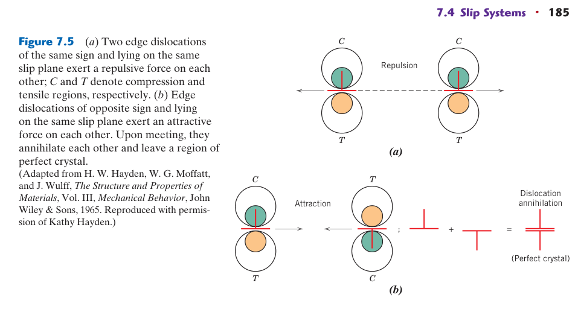
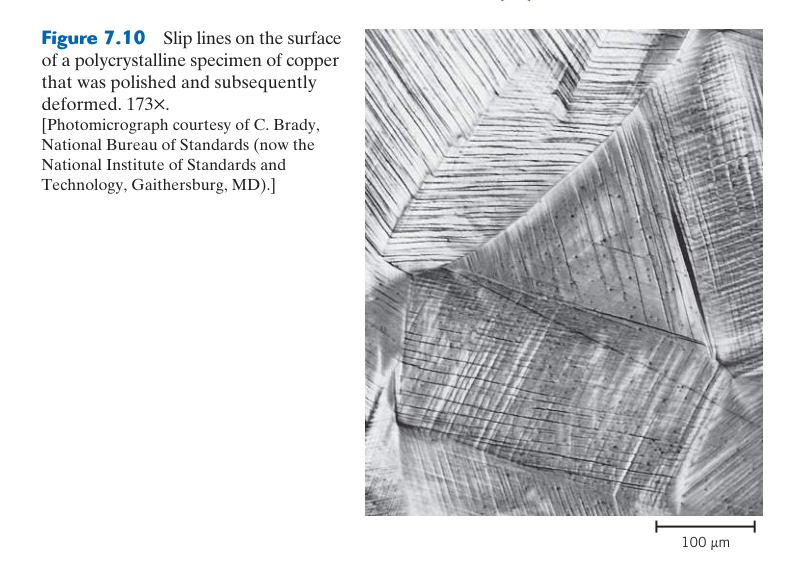
從表面痕跡回推晶體學
滑移面與自由表面的交線決定痕跡方向；若已知表面法線與晶粒取向，可把候選晶面投影到影像平面，與實測線條比較。單一痕跡可能對應多個具有相同投影的晶面，因此還需搭配載荷方向、Schmid 因子與 EBSD。表面拋光刮痕通常跨越晶界保持同方向，而滑移線會隨晶粒取向改變，兩者可藉此區分。
滑移局部化與後續失效
變形不一定均勻分散。差排反覆在少數面上通過會形成密集滑移帶，造成表面擠出與侵入；循環載荷下，這些 persistent slip bands 是疲勞微裂紋的重要起點。觀察滑移帶密度、交叉滑移和晶界終止位置，可判斷哪些晶粒先降伏以及變形是否被晶界阻塞。
判讀重點：單一差排穿出表面只形成一個 Burgers 向量尺度的台階，通常無法由光學顯微鏡直接看見。可見滑移線其實是大量差排反覆通過相近滑移面的累積結果；若要由表面痕跡確定完整滑移系統，還需結合 EBSD 晶粒取向。
當差排從晶體內部滑移到自由表面並逸出時，在表面留下一個原子級的滑移台階（slip step）——高度等於 Burgers 向量的分量。數百至數千個平行滑移面上的差排相繼滑出 → 台階累積成肉眼可見的滑移線（slip line）。大量密排的滑移線聚集形成滑移帶（slip band）。拋光試片拉伸後，表面出現的平行線條就是滑移帶——這是差排活動的最直接巨觀證據。疲勞裂紋的起始點（持續滑移帶 PSB，Ch8）正是從這些滑移帶發展而來的侵入和擠出。
7.6 多晶變形——差排的跨晶粒傳播
相容性造成晶粒內部應力
各晶粒的彈性常數、Schmid 因子與硬化速率不同，但晶界要求位移連續，不能讓一顆晶粒任意伸長而鄰粒不跟隨。於是容易滑移的晶粒受到鄰粒拘束，不利取向晶粒則承受額外應力；宏觀降伏是一批晶粒逐步參與的過程，而非全體在單一應力瞬間降伏。這也使多晶的降伏與單純單晶平均不同。
差排傳遞的幾何與能量
常用幾何因子比較入射與出射滑移面的夾角，以及兩側滑移方向的對準程度；對準越好，傳遞所需殘餘 Burgers 向量越小。高角度晶界通常阻力較大，但晶界特殊結構、局部應力與溫度也很重要。不能傳遞的差排可被吸收為晶界差排，改變晶界應力、遷移率與後續裂紋敏感性。
Hall–Petch 關係只在一定晶粒尺度成立。當晶粒細到奈米級，晶內難以容納傳統差排源，晶界滑動、旋轉與擴散可能接管變形，強度不再持續依 $d^{-1/2}$ 上升，甚至出現反 Hall–Petch 趨勢。
晶界附近常形成幾何必需差排，以協調相鄰晶粒不同的塑性梯度。利用 EBSD 的局部取向差可間接描繪這些高應變區，但它是空間平均指標，不能把每個像素的取向差直接當成精確差排密度。
晶界不只是牆：差排抵達晶界後可能被吸收、分解、沿界面移動，或在鄰晶粒啟動新差排。能否傳遞取決於兩側滑移面和方向的對準程度、殘餘 Burgers 向量與晶界結構；傳遞困難時的堆積應力既可促進鄰粒降伏，也可能促成微裂紋。
多晶材料中，每個晶粒取向不同 → Schmid 因子不同 → 不同晶粒在不同應力下開始降伏。但更關鍵的是差排無法穿越晶界——兩側的滑移系統方向不同，差排的 Burgers 向量在對側晶粒中沒有對應的滑移系統。因此差排在晶界前堆積（pile-up），形成一個應力集中源。堆積中的差排數量 $n \propto d$（晶粒愈大 → 可容納愈多差排在晶界前），而堆積前端的應力集中 $\propto n\tau \propto d\tau_{applied}$。
當堆積前端的應力達到鄰近晶粒中啟動差排源（Frank-Read 源）的臨界值時，鄰近晶粒開始塑性變形——變形由此跨晶粒傳播。這解釋了 Hall-Petch 關係的物理：晶粒愈細 → $n$ 愈小 → 需要更高的外加應力才能達到臨界應力集中 → $\sigma_y$ 愈高。多晶純銅 $\sigma_y \approx 30$–70 MPa，比單晶（0.5–1 MPa）高 30–140 倍——不是因為晶界本身「更強」，而是因為晶界阻止了差排自由穿越。
7.7 變形雙晶——當滑移失效時的備援機制
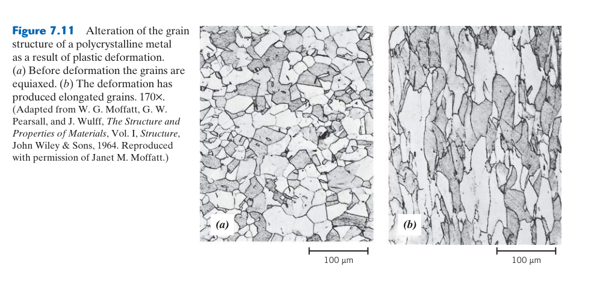
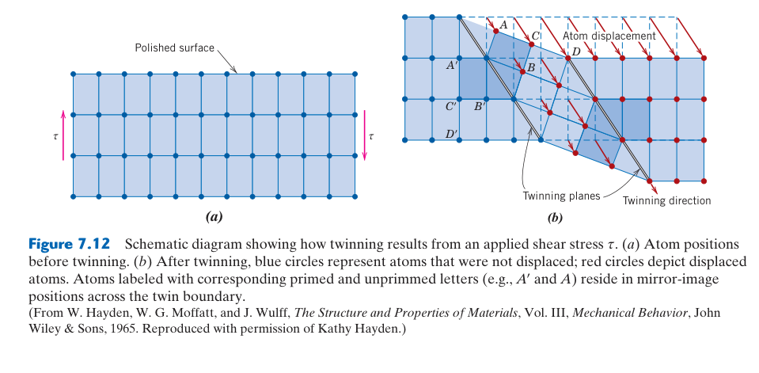
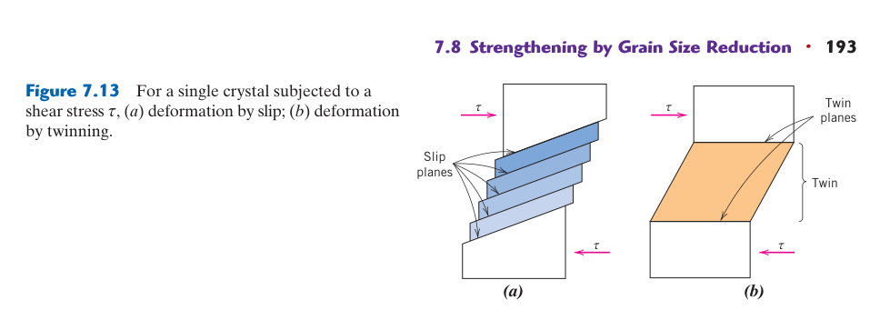
雙晶與滑移的原子位移差異
滑移使晶體兩側發生整數 Burgers 向量的相對平移，滑移後晶格取向不變；雙晶則讓連續原子面按距雙晶面成比例位移，使一區晶格成為母晶的鏡像或特定旋轉關係。雙晶剪切具有固定方向與大小，因此其變形不像滑移般可任意累加。
何時雙晶更具競爭力
雙晶成核通常需要較高局部應力，但傳播可非常快速。低溫抑制熱激活滑移、高應變速率來不及產生足夠差排、晶粒取向不利或 HCP 獨立滑移系統不足時，雙晶的重要性提高。晶粒細化常抑制雙晶，因為建立臨界雙晶胚胎的空間和應力條件更難滿足。
雙晶既能增加延性，也可能帶來局部化。新取向可啟動額外滑移，但雙晶尖端與晶界交會處會集中應力；大量孿晶界可細分晶粒並強化，若傳遞受阻又可能成為裂紋起始位置。判讀其作用需結合數量、厚度、變體與載入方向。
退火雙晶與變形雙晶雖都具有特殊取向關係，形成原因不同。前者常伴隨 FCC 金屬晶界遷移與晶粒成長，邊界較平直；後者由載荷驅動，常呈透鏡或尖端形貌。僅看一條平行界面便判定衝擊歷史，容易誤判。
EBSD 可用特定取向關係辨認雙晶變體，但空間解析度不足時，極薄雙晶可能漏測；TEM 或高解析影像可補足奈米尺度資訊。
因此雙晶分率應連同量測尺度與步距報告。
雙晶的主要價值是重新取向：它提供的總塑性應變通常有限，卻能迅速旋轉局部晶格，使原本不利的滑移系統轉到有利方向。低溫、高應變速率、低堆疊錯能或滑移自由度不足時較易發生；形成的雙晶界也會阻擋後續差排。
變形雙晶（deformation twinning）是滑移之外的替代變形機制。與滑移（差排逐步掃過滑移面，產生連續晶格平移）不同，雙晶是整個晶體區域均勻剪切為鏡像對稱的新取向——每個原子面的位移量與距雙晶面的距離成正比。雙晶的應變量固定且較小（通常 <0.1），但雙晶形成後改變了晶格取向——原本不利的滑移系統可能在雙晶區域中變得有利 → 滑移可在雙晶內繼續。
變形雙晶在以下情況特別重要：(1) BCC 金屬在低溫（低於 DBTT）——滑移的熱激活不足，雙晶成為主要變形機制；(2) HCP 金屬——基底滑移系統不足，雙晶提供額外應變；(3) 高應變速率變形（爆炸成形、衝擊）——滑移來不及發生，雙晶的極快速形成（接近音速）主導變形。變形雙晶在顯微照片中是透鏡狀的平行條紋，與退火雙晶的平直邊界不同——這在失效分析（Ch8）中是辨識低溫或衝擊變形的關鍵「指紋」。
失效分析中，變形雙晶的存在是低溫或高應變速率變形的強力證據。如果一個斷裂的低碳鋼零件在斷口附近有大量變形雙晶 → 它在低溫下承受了衝擊載荷。退火雙晶（平直、貫穿整個晶粒）則意味著材料經歷了再結晶退火——完全不同的製程歷史。
7.8 晶粒細化與固溶強化
Hall–Petch 參數如何使用
$\sigma_y=\sigma_0+k_y d^{-1/2}$ 中，$\sigma_0$ 代表晶格摩擦與晶內其他阻力，$k_y$ 反映晶界阻擋與差排傳遞難度。$d$ 必須和 $k_y$ 所採長度單位一致；把 μm 直接代入以 m 為單位的常數會造成三個數量級誤差。關係式也應由同一材料、溫度與組織範圍的實驗資料校正，不能跨合金套用。
晶粒細化的製程路徑
控制凝固成核、熱機械軋延、再結晶與第二相釘扎都可細化晶粒。只增加變形量不一定得到最細晶：若後續加熱過高或保持過久，晶粒會快速成長；若析出物過早粗化，也失去釘扎效果。因此細晶設計其實是「提供成核＋限制長大」的整體製程。
固溶強化的微觀匹配
尺寸較大的置換原子偏好刃差排拉伸區，較小原子偏好壓縮區，以降低總彈性能；模數較軟或較硬的溶質也會和差排能量場交互作用。間隙 C、N 產生非球對稱畸變，可同時強烈作用於刃與螺旋差排。溶質若能在服役溫度快速擴散，還可能形成 Cottrell 氣團、降伏點與動態應變時效。
強度之外的代價
晶粒過細會提高晶界擴散、偏析與高溫晶界滑動；固溶量提高則可能降低導電與導熱、增加密度或促成脆性相。工程最佳化應以服役失效模式選擇機制，而不是把所有可用溶質與晶界都推到最大。
兩種機制也可能互相影響：溶質偏析到晶界可拖曳晶界並穩定細晶，卻也可能降低晶界凝聚力；微合金析出物能釘扎晶界，同時阻擋差排。要分辨各自貢獻，需比較晶粒尺寸、溶質狀態與析出物都受控的系列試樣。
強化增量也不一定能簡單線性相加；多種障礙競爭時常採平方和或其他交互作用模型，並需用實驗校正。
工程取捨：細晶縮短差排堆積長度，通常也改善低溫韌性，但高溫時大量晶界可能加速擴散潛變。固溶強化來自尺寸錯配與模數錯配；增加溶質雖可提高強度，也可能降低導電率、延性或促使脆性第二相形成。
1. 晶粒細化（grain size reduction）：晶界阻擋差排。細晶粒 → 更多晶界 → 差排堆積更短 → 需要更高應力觸發鄰近晶粒。$\sigma_y = \sigma_0 + k_y d^{-1/2}$，$d$ 從 100 μm 降到 10 μm → $\sigma_y$ 提高約 3 倍。晶粒細化同時提高韌性（裂紋在晶界處頻繁偏折 → 消耗更多能量 → 韌性上升）。這是唯一同時提高強度和韌性的強化機制——其他三種均以犧牲延性換取強度。
2. 固溶強化（solid-solution strengthening）：雜質原子造成晶格畸變（尺寸效應或模數效應）→ 畸變應力場與差排應力場交互作用 → 差排移動需要額外應力。強化增量與濃度的關係：$\Delta\sigma_y \propto C^{1/2}$（取代型，Fleischer 模型）或 $\propto C^{2/3}$（間隙型）。非對稱畸變（間隙溶質如 C 在 BCC 鐵中產生正方畸變）同時與刃差排和螺旋差排交互作用 → 強化效果遠大於對稱畸變的取代型溶質。這就是為什麼 0.1 wt% C 對鐵的強化遠大於 1 wt% Mn。
📝 範例 7.2：Hall-Petch 計算
黃銅 $\sigma_0 = 25$ MPa, $k_y = 12.5$ MPa·mm¹/²。晶粒從 0.05 mm 細化到 0.01 mm：$\sigma_y(0.05) = 25 + 12.5/\sqrt{0.05} = 80.9$ MPa，$\sigma_y(0.01) = 25 + 12.5/\sqrt{0.01} = 150$ MPa——降伏強度幾乎翻倍。
7.9 加工硬化——差排的「交通堵塞」
加工硬化的三個階段
單晶塑性初期常以單滑移為主，差排可移動較長距離，硬化率低；隨多重滑移啟動，森林差排密度快速增加，硬化率升高；大應變下交滑移與動態回復使部分差排湮滅，硬化率再下降。多晶因晶界相容性較早啟動多系滑移，階段界線通常不如單晶清楚。
冷加工百分比的限制
%CW 以截面積減少量表示，適用拉線、軋延等近似體積守恆製程，但它不是唯一塑性應變量。多道次加工的百分比不能簡單相加，應由初始與最終面積計算，或使用真應變 $\ln(A_0/A_f)$ 累積。不同變形路徑即使 %CW 相同，也可能產生不同織構、殘留應力與性質方向性。
硬化與成形穩定性
加工硬化使局部薄化區需要更高流動應力才能繼續變形，因而延緩頸縮；沒有足夠硬化能力的板材容易快速局部化。另一方面，硬化後的零件回彈更大、延性餘裕更少，可能需中間退火才能繼續深抽或拉線。
載荷反向時還會出現 Bauschinger 效應：先前累積的背應力使反向降伏提早。板材經彎曲再矯直、管材往復載入或地震循環設計，都不能只用單調拉伸的等向硬化曲線預測。
加工硬化形成的織構還會使後續降伏面改變形狀；因此成形模擬常需各向異性降伏準則與運動硬化參數，而非只有一條真應力–真應變曲線。
退火前的儲存能分布也由這些差排結構決定，會影響後續再結晶位置與織構。
因此同一冷加工量仍可能有不同硬化狀態。
微觀量化：塑性變形使差排倍增、交切並形成森林障礙，流動應力常以 $\sigma=\sigma_0+\alpha Gb\sqrt{\rho}$ 近似。加工硬化提升強度與硬度，卻消耗均勻延性並累積殘留應力；後續退火可透過回復與再結晶重新調整此平衡。
3. 加工硬化（strain hardening / work hardening）：塑性變形過程中，Frank-Read 源不斷產生新差排 → 差排密度從退火態的 ~10¹⁰ m⁻² 升至重度冷加工的 ~10¹⁵–10¹⁶ m⁻²。隨著差排密度上升，移動差排必須穿過愈來愈擁擠的「差排森林」——差排之間的交互作用（糾結、交割、形成割階）使移動愈來愈困難。加工硬化所需的應力：$\tau = \alpha Gb\sqrt{\rho}$（Taylor 方程式，$\alpha \approx 0.3$–0.5）。
加工硬化量通常以冷加工百分比 %CW = $(A_0 - A_d)/A_0 \times 100$ 表示（$A_d$ = 變形後截面積）。20% CW 可使銅的 $\sigma_y$ 從 ~70 MPa 提升到 ~300 MPa——但 %EL 從 45% 降到 ~10%。加工硬化有極限——當 $\rho_d$ 太高 → $\tau \propto \sqrt{\rho}$ 超過材料的斷裂強度 → 破裂。這就是為什麼冷加工量有限制（銅線最多 ~90% CW）。
高強度低合金鋼（HSLA）同時使用：晶粒細化（控制軋延）+ 固溶強化（Mn, Si）+ 析出硬化（Nb, V, Ti 碳氮化物）+ 加工硬化。材料設計就是這些機制的組合與平衡。
7.10 析出硬化——奈米顆粒的釘紮效應
完整熱處理的三個步驟
固溶處理先把可溶第二相溶入母相；淬火抑制平衡析出，保留過飽和固溶體與空位；時效再讓溶質形成高密度細小析出物。若固溶溫度不足，粗大相未完全溶解；若過高則可能局部熔化或晶粒粗化。淬火太慢會在晶界或冷卻途中提前析出，降低後續可用溶質並形成無析出帶。
粒子尺寸與間距共同控制強化
早期 GP 區或共格粒子很小，雖數量多但單顆障礙較弱；成長後切過所需應力增加。當粒子變為半共格或非共格，差排改採繞過，Orowan 應力大致隨粒子間距縮小而提高。粗化使粒子數下降、間距增加，因此過時效軟化。峰值強度出現在兩種機制交會附近，而非某個普遍固定粒徑。
服役中的穩定性
析出強化只在粒子於使用溫度保持細小時有效。長時間高溫會 Ostwald ripening，大粒子因曲率低而長大、小粒子溶解；共格應變也可能消失。高溫合金因此重視低擴散元素、低界面能和穩定有序相，而室溫高強鋁合金則需注意過時效、自然時效與焊接熱影響區軟化。
切過與繞過的競爭：細小共格析出物常被差排切過，阻力來自共格應變、模數差與有序結構；粒子長大、失去共格後，差排傾向 Orowan 繞過。時效不足時粒子太少，過時效時粒子間距過大，只有峰值時效附近障礙最有效。
4. 析出硬化（precipitation hardening，Ch11 詳述）：過飽和固溶體中奈米級第二相均勻析出 → 差排必須切穿（共格小顆粒，<5–10 nm）或繞越（Orowan 機制，非共格大顆粒）這些障礙物。Orowan 繞越所需的額外應力：$\Delta\tau = Gb/L$，其中 $L$ 是顆粒之間的間距。關鍵：$L$ 愈小 → 強化愈強。峰值時效對應於大量奈米級（~5–20 nm）、緊密間距的過渡相析出物——而非粗大的平衡相。當析出物粗化（Ostwald 熟化，過時效）→ $L$ 增大 → 強度下降。
鋁合金（Al-Cu 杜拉鋁）和鎳超合金（$\gamma'$ 析出物）的核心強化機制都是析出硬化。這是最有效的強化機制——可使鋁合金的強度從純鋁的 ~50 MPa 提升到 7075-T6 的 ~500 MPa（10 倍！）。但代價是犧牲延性和耐蝕性（晶界析出物導致局部腐蝕）。
7.11 回復——差排的局部重排
回復包含哪些可觀察階段
低溫先由點缺陷遷移與內應力鬆弛開始，電阻率可能明顯下降；再提高溫度，異號差排藉攀移與交滑移相遇湮滅，剩餘差排排列成低能差排牆，形成多邊化與亞晶。亞晶之間是低角度晶界，取向差可用差排間距描述，尚未形成典型再結晶的大角度新晶粒。
性質不會以相同比例恢復
電阻率對點缺陷敏感，可能最早回復；殘留應力和延性接著改善；硬度與降伏強度因大量差排仍在，下降通常較有限。這種差異讓低溫消除應力退火能減少尺寸不穩與應力腐蝕風險，同時保留大部分冷加工強度。
回復速率取決於原子與空位可動性。高堆疊錯能金屬如 Al 較易交滑移，回復顯著；低堆疊錯能材料的差排分裂較寬、交滑移困難，儲存能保留較多，後續再結晶驅動力也可能更大。
若回復在變形同時發生，稱動態回復；流動應力可能進入近穩態而非持續硬化。熱擠製鋁合金便常由此形成亞晶結構。它與變形後再加熱的靜態回復，在時間順序與所得組織上不同。
與再結晶的差別：回復藉差排滑移、交滑移與攀移，使異號差排湮滅、剩餘差排排列成亞晶界。內應力與電阻率可明顯下降，但原有拉長晶粒大致保留；它降低儲存能，卻尚未以全新無應變晶粒取代原組織。
冷加工金屬儲存了大量應變能（以差排密度的形式），在熱力學上不穩定。加熱時經歷三個階段。第一階段：回復（recovery，~0.3$T_m$）——差排重新排列為低能組態（多邊化，polygonization）：雜亂的差排重組成規則的差排牆（低角度晶界），將晶粒劃分為差排密度較低的亞晶粒（subgrain）。回復過程中：電阻顯著下降（點缺陷——主要是空位——擴散消除）、內耗下降（差排的阻尼振動減少）、但強度和硬度變化不大（差排總密度未顯著降低——只是重新排列，未消除）。
工業上的應力消除退火（stress-relief annealing）就是回復處理：加熱至 ~450–600°C → 消除焊接、鑄造、切削產生的殘留應力（透過局部塑性鬆弛），但不改變微觀結構和強度。用於大型焊接結構（壓力容器、船體）以防止應力腐蝕開裂。
7.12 再結晶——新晶粒取代變形結構
成核位置其實是高差排區重組
再結晶「成核」不等同凝固中由幾個原子隨機形成新相，而常是既有亞晶在高儲存能區成長並轉為可移動大角度晶界。原晶界、剪切帶、第二相周圍和變形不均區都是有利位置。晶界移動吞噬高差排密度基材，使硬度下降、延性恢復並建立新的織構。
時間、溫度與前變形的耦合
升高退火溫度可大幅縮短達到相同再結晶分率的時間；前冷加工越大，儲存能與成核位置越多，再結晶溫度通常越低、晶粒越細。純金屬因晶界移動容易，所需溫度較低；溶質與細粒子產生拖曳或釘扎，使過程延遲。
部分再結晶的風險
若退火中途停止，組織同時含軟的新晶粒和硬的變形晶粒，塑性會優先集中在軟區，造成不均勻變形。製程控制不能只用爐溫判斷，應搭配硬度、金相、EBSD 或機械性質確認分率與晶粒尺寸。
再結晶還會改變織構。新晶粒取向不是完全隨機，可能承襲、旋轉或選擇性吞併變形組織，因而改善或惡化深抽耳高、疲勞與磁性。退火規格除晶粒尺寸外，也應控制取向分布。
第二相粒子可能促進粒子刺激成核，也可能釘扎晶界抑制成長；作用方向取決於粒子尺寸、間距與變形區域，不能籠統地說粒子一定加速再結晶。
因此同一合金改變加熱速率，也可能得到不同再結晶路徑。
再結晶溫度不是固定常數：它是材料在指定時間內達到某轉變分率的操作指標，會隨純度、冷加工量與初始晶粒尺寸改變。前變形不足時儲存能太低，只會回復或形成少數粗晶；變形越大，成核位置通常越多，所得晶粒越細。
再結晶（recrystallization）：無應變的新晶粒在高度變形的基體中成核和成長，完全取代變形結構。成核機制不是古典均質成核（能量上不可能），而是應變誘導邊界遷移（SIBM）：變形基體中局部儲存能差異驅動既有高角度晶界向高儲存能側遷移 → 遷移過的區域差排被晶界「掃除」→ 留下無應變的再結晶核心。
再結晶溫度不是材料常數——它取決於：(1) 冷加工量（變形愈大 → 儲存能愈高 → 溫度愈低，90% CW 銅在 ~180°C 再結晶，5% CW 可能需要 >400°C）；(2) 退火時間（低溫長時間 ≈ 高溫短時間）；(3) 純度（雜質釘紮晶界 → 大幅提高再結晶溫度）；(4) 原始晶粒大小（細晶粒更多成核位置 → 再結晶更快）。工業上約定「再結晶溫度」為高度冷加工材料在 1 小時內完成再結晶的溫度——約 $0.3$–$0.6T_m$。
退火後的 FCC 金屬（銅、黃銅、沃斯田鐵不銹鋼）顯微照片中常見平行直線條紋橫貫晶粒——退火雙晶。形成機制：再結晶晶粒成長時，{111} 面的堆疊順序偶爾出錯形成鏡像對稱。退火雙晶是 FCC 金屬再結晶的可靠標誌——BCC 金屬不形成退火雙晶。
7.13 晶粒成長——大吞小的熱力學驅動
正常成長的動力學
理想正常晶粒成長常寫成 $d^n-d_0^n=Kt$。理想曲率控制可能接近 $n=2$，但溶質拖曳、粒子釘扎、織構與三維拓樸會使實驗指數偏離。$K$ 又服從 Arrhenius 型溫度關係，所以短時間過熱可能造成比長時間低溫更劇烈的粗化。
Zener 釘扎的上限
分散粒子對移動晶界施加釘扎壓力；粒子體積分率越高、半徑越小，限制晶粒成長的能力越強。若粒子在退火中溶解或自身粗化，釘扎壓力下降，晶界會突然釋放。設計微合金鋼時，NbC、TiN 等析出物既可抑制沃斯田鐵晶粒，也需控制其溶解溫度與析出時機。
異常晶粒成長
正常成長保持相似的尺寸分布；異常成長則由少數具高遷移率或較低釘扎的晶粒快速吞併基材。可能原因包括粒子分布不均、特殊晶界、強織構或表面能差異。粗大晶粒不只降低 Hall–Petch 強度，也會造成橘皮表面、疲勞散布與磁性方向性；但在矽鋼中，受控制的二次再結晶反而可建立有利織構。
不能只追求最細晶
細晶有利室溫強度與韌性，粗晶則減少高溫晶界滑動、擴散與氧化通道，單晶更適合渦輪葉片的極端潛變環境。最佳晶粒尺寸取決於主導失效模式，熱處理應以服役溫度和載荷為目標，而不是套用單一「越細越好」規則。
量測成長也不能只報平均值。少量異常粗晶可能在數目平均中被掩蓋，卻主導表面橘皮或疲勞起始；應同時報告分布、最大晶粒、取樣方向與視野數，並區分等軸與拉長晶粒。
焊接熱影響區是典型局部粗化問題：峰值溫度與停留時間沿距離快速改變，最粗晶區往往成為韌性最低位置，需靠熱輸入與微合金釘扎控制。
這也說明平均晶粒尺寸無法取代對最弱局部區域的檢查；可靠度通常由極端粗晶而不是整體平均值控制。
製程規格應限制異常粗晶比例與最大尺寸，而不只規定平均 ASTM 晶粒度。
曲率與釘扎：小晶粒平均曲率較大、化學勢較高，晶界移動因而使大晶粒吞併小晶粒。溶質拖曳與細小第二相可產生 Zener 釘扎；當粒子溶解、粗化或分布不均時，少數晶粒可能異常長大，形成雙峰組織與局部性質差異。
再結晶完成後，材料由細小的無應變晶粒組成。但這個狀態在熱力學上不是最穩定的——總晶界面積仍然很大。進一步加熱或保溫 → 晶粒成長：大晶粒吞併小晶粒（晶界向曲率中心遷移），驅動力是總晶界面積（和總晶界能）的降低。
晶粒成長的動力學：$d^n - d_0^n = Kt$，$n$ 通常 ~2。注意：時間依賴是冪律（$d \propto t^{1/2}$），不是線性——晶粒成長隨時間逐漸減慢。晶粒成長導致強度下降（Hall-Petch：$d \uparrow \to \sigma_y \downarrow$），但韌性通常先升後降（過大晶粒變脆）。
晶粒成長的控制：(1) 第二相顆粒（如鋼中的 AlN、NbC）釘紮晶界（Zener pinning）——晶界遷移時遇到顆粒 → 晶界面積局部減少 → 被「釘住」。釘紮力 $\propto f/r$（$f$ = 顆粒體積分率，$r$ = 顆粒半徑）。(2) 控制冷卻速率——再結晶完成後快速冷卻以「凍結」細晶粒。(3) 溶質拖曳效應——雜質原子偏析到晶界 → 晶界遷移必須拖著雜質一起移動 → 遷移速率降低。
📝 自編概念例：冷加工量對再結晶晶粒大小的影響
現象：純鋁經 20% 冷加工後退火得到粗大晶粒（~500 μm），經 80% 冷加工後退火得到細小晶粒（~30 μm）。
解釋：再結晶晶粒大小 $d_{rex} \propto 1/\sqrt{N}$（$N$ = 成核密度）。大變形量 → 更多局部高應變區域（更多成核位置）→ $N$ 大 → $d_{rex}$ 小。工程陷阱：冷加工量在臨界值附近（~3–8%），成核位置極少 → 形成異常粗大晶粒（可達 cm 級！）→ 這就是為什麼金屬成形中要避免輕度變形後退火。
四大強化機制的工程選擇指南
沒有「最好」的強化機制——只有最適合特定應用的組合：
| 應用場景 | 推薦機制 | 理由 |
|---|---|---|
| 低溫結構鋼（船舶、橋樑） | 晶粒細化 + 少量固溶 | 需要低 DBTT 和高韌性；細晶粒同時提高強度和韌性 |
| 汽車車身鋼板 | 晶粒細化 + 加工硬化 | 控制軋延細化晶粒 + 適度冷軋提高強度；需良好成形性 |
| 航空鋁合金機翼（7075-T6） | 析出硬化為主 + 晶粒細化 | 最高比強度；可接受犧牲部分延性和耐蝕性 |
| 變壓器矽鋼 | 大晶粒（反向思維） | 大晶粒減少磁滯損失——需要的是磁性能而非力學強度 |
| 冷鍛螺栓 | 加工硬化 | 冷鍛成形過程中自然引入加工硬化——不需額外熱處理 |
| 燃氣渦輪葉片（鎳超合金） | 析出硬化（γ'）+ 固溶 + 單晶 | 1000°C 高溫下 γ' 析出物穩定；單晶消除晶界潛變 |
不同強化機制的貢獻不是簡單相加。線性疊加（$\sigma_y = \sigma_0 + \Delta\sigma_{HP} + \Delta\sigma_{SS} + \Delta\sigma_{WH} + \Delta\sigma_{PH}$）通常高估總強度，因為各機制的障礙物可能互相影響。例如：固溶原子可能偏析到晶界 → 改變 $k_y$（Hall-Petch 斜率）；析出物優先在差排上成核 → 改變加工硬化行為。更精確的疊加規則（均方根疊加 $\sigma_y = \sigma_0 + \sqrt{\Delta\sigma_{HP}^2 + \Delta\sigma_{SS}^2 + ...}$ 或線性疊加適用於不同尺度的障礙物）仍是一個活躍的研究領域。工程實踐中使用大量的經驗數據和試誤——這就是為什麼材料開發仍然是一門「經驗科學」。但隨著計算材料科學（CALPHAD 熱力學、相場模擬、晶體塑性有限元素法）的進步，從完全依賴試誤轉向理論指導的實驗設計正在加速新合金的開發週期。
補強專題：四種強化機制的定量尺度與工程取捨
| 機制 | 主要障礙 | 常用尺度關係 | 典型代價／限制 |
|---|---|---|---|
| 晶粒細化 | 晶界阻擋差排堆積 | $\sigma_y=\sigma_0+k_y d^{-1/2}$ | 高溫時晶界擴散、滑動與晶粒成長加快 |
| 固溶強化 | 溶質尺寸與模數失配的應力場 | $\Delta\sigma_{ss}\propto c^n$，常見 $n\approx1/2$–$2/3$ | 可能降低導電率、增加偏析或脆化風險 |
| 加工硬化 | 差排彼此纏結 | $\Delta\sigma\approx\alpha Gb\sqrt{\rho_d}$ | 延性下降、殘留應力與各向異性增加 |
| 析出強化 | 差排切過或繞過第二相 | 細小可切割粒子 → 切割；粗大不可切割粒子 → Orowan 繞過 | 過時效使粒子粗化、間距增加，強度下降 |
多種機制同時存在時，強化增量通常不能簡單全部相加；因為它們可能作用於相同差排，交互作用方式依材料與障礙尺度而異。工程上應以實驗資料或合適的疊加模型校正。
為什麼強度提高常伴隨延性下降？
塑性變形需要差排持續移動。障礙增加後，啟動塑性所需應力提高，但材料也更難在裂紋尖端形成足夠塑性區來鈍化裂紋，因此均勻伸長與斷裂韌性常下降。這不是絕對定律：晶粒細化常能同時提高強度並改善韌性，因為更多晶粒可分散變形、縮短有效裂紋路徑。
📝 定量比較：晶粒細化能增加多少降伏強度？
某鋼的 $\sigma_0=150$ MPa、$k_y=0.70$ MPa·m$^{1/2}$。晶粒由 $d_1=100\ \mu$m 細化到 $d_2=10\ \mu$m。
$\sigma_{y1}=150+0.70(100\times10^{-6})^{-1/2}=220$ MPa；$\sigma_{y2}=150+0.70(10\times10^{-6})^{-1/2}\approx371$ MPa。
晶粒尺寸縮小十倍使降伏強度增加約 151 MPa，但不是增加十倍，因為 Hall–Petch 關係依賴 $d^{-1/2}$。
本章摘要
四大強化機制對照表
| 機制 | 原理 | 關鍵公式 | 對韌性的影響 |
|---|---|---|---|
| 晶粒細化 | 晶界阻擋差排 | $\sigma_y = \sigma_0 + k_y d^{-1/2}$ | ✅ 同時提高韌性（唯一） |
| 固溶強化 | 溶質原子晶格畸變→阻礙差排 | $\Delta\sigma \propto C^{1/2}$（取代型） | ⚠️ 犧牲部分延性 |
| 加工硬化 | 更多差排→交互作用→移動困難 | %CW = $(A_0-A_d)/A_0 \times 100$ | ⚠️ 強度↑延性↓ |
| 析出硬化 | 奈米顆粒釘紮或強迫差排繞越 | $\Delta\tau = Gb/L$（Orowan） | ⚠️ 犧牲延性（過時效可改善） |
退火三階段
| 階段 | 溫度範圍 | 微觀變化 | 性質變化 |
|---|---|---|---|
| 回復 | ~0.3 $T_m$ | 差排重排為低能組態（多邊化） | 強度略降、電阻↓、內耗↓ |
| 再結晶 | ~0.4–0.6 $T_m$ | 無應變新晶粒成核→取代變形結構 | 強度大幅下降、延性恢復 |
| 晶粒成長 | >0.6 $T_m$ | 大晶粒吞併小晶粒 | 強度持續下降（Hall-Petch） |
- 四大強化 = 給差排製造障礙：晶界（Hall-Petch）、溶質原子（晶格畸變）、其他差排（加工硬化）、析出顆粒（Orowan 繞越）。
- 滑移系統數量決定塑性：FCC 12 個→極佳延性；HCP 3 個→室溫脆性。Schmid 因子決定哪個系統先啟動。
- 晶粒細化是唯一的雙贏機制：同時提高強度和韌性（裂紋在晶界處偏折→消耗更多能量）。
- 退火可逆轉加工硬化：三階段（回復→再結晶→晶粒成長）的溫度和時間控制決定了最終性質。
📝 概念診斷題
- 單晶銅的臨界分解剪切應力 $\tau_{crss} \approx 0.5$ MPa，但多晶銅的降伏強度約為 30–70 MPa。為什麼多晶比單晶強了 60–140 倍？提示：思考晶界的作用和 Schmid 因子在多晶中的變化。
- 一個金屬試片經 40% 冷加工後降伏強度從 200 MPa 提升到 450 MPa，但 %EL 從 45% 降到 8%。如果要保留一定的延性（%EL > 15%），同時提高強度——應該選擇哪種強化機制？為什麼？
- 兩個純銅試片：A 在 500°C 退火 1 小時後晶粒大小為 20 μm；B 在 500°C 退火 4 小時後晶粒大小為 60 μm。根據 Hall-Petch 關係（$\sigma_0 = 25$ MPa, $k_y = 0.12$ MPa·m¹/²），哪個降伏強度更高？高出多少？
- 為什麼即使再結晶可以完全消除加工硬化，工業上仍然大量使用冷加工材料？提示：代價是什麼？哪些情況允許犧牲延性？
- 為什麼 HCP 金屬（Mg, Zn, Ti-α）在室溫下的可成形性遠不如 FCC 金屬（Al, Cu, 沃斯田鐵不銹鋼）？有沒有辦法改善 HCP 金屬的室溫成形性？提示：滑移系統數量與 von Mises 準則。
⚠️ 初學者常見錯誤
不全對。退火包含回復（保留強度）→再結晶（軟化）→晶粒成長（過度軟化）。工業退火需精確控制以達到目標性質。
錯。這是唯一同時提高強度和韌性的強化機制。其他三種均以犧牲延性換取強度。
錯。再結晶溫度取決於冷加工量（變形愈大愈低）、退火時間（低溫長時間 = 高溫短時間）、純度（雜質大幅提高再結晶溫度）和原始晶粒大小。工業上的「再結晶溫度」是高度冷加工材料在 1 小時內完成再結晶的溫度——這只是一個約定參考值，不是物理常數。
📚 延伸資源
- Hull, D. & Bacon, D.J., Introduction to Dislocations — 差排理論的權威教科書，從晶體學到強化機制
- Humphreys, F.J. & Hatherly, M., Recrystallization and Related Annealing Phenomena — 回復、再結晶與晶粒成長的完整處理
- Argon, A.S., Strengthening Mechanisms in Crystal Plasticity — 四大強化機制的物理模型深度分析
- 下一章：第 8 章：破損——斷裂、疲勞、潛變
🧪 推導與診斷
方程式使用契約
- Hall-Petch 關係在 $d < 10$–20 nm 時可能失效（反 Hall-Petch）——晶界滑動和擴散主導變形
- Schmid 定律預測的是單晶的降伏起始。多晶降伏涉及晶粒間的應力相容性（需要 5 個獨立滑移系統）
- 加工硬化的 Taylor 方程式 $\tau = \alpha Gb\sqrt{\rho}$ 假設差排均勻分布——實際上差排形成胞狀結構（cell structure），Taylor 方程式需要修正因子
診斷
為什麼 Hall-Petch 關係是 $d^{-1/2}$ 而非 $d^{-1}$？
晶界對差排的阻力來自差排在晶界前的堆積（pile-up）。堆積中的差排數量 $n \propto d$（晶粒愈大，可容納愈多差排），而堆積前端的應力集中 $\propto n\tau \propto d\tau$。當應力集中達到鄰近晶粒中啟動差排源的臨界值時，降伏發生——由此導出 $\tau_y \propto d^{-1/2}$。$d^{-1}$ 則對應於簡單的「障礙密度正比於晶界面積」的錯誤推理。
為什麼 FCC 金屬有 12 個滑移系統但只有 5 個是「獨立的」？
「獨立」意味著該滑移系統產生的應變不能由其餘系統的組合產生。{111}⟨110⟩ 的 12 個系統中，同一 {111} 面上的 3 個 ⟨110⟩ 方向只有 2 個線性獨立（第三個 = 前兩個的向量和），而 4 個不同的 {111} 面 × 每個面 2 個獨立 = 8 個獨立——但晶體學對稱性進一步將此降到 5（Bishop-Hill 分析）。5 個獨立系統恰好滿足任意形狀變化（等體積）所需的最小數——這就是為什麼 FCC 多晶具有優異的延性。